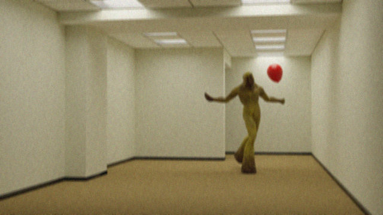

Informações Iniciais
Localidade: Nível Fun e em vários outros níveis;
Comportamento: Extremamente agressivos, inteligentes,
silenciosos e furtivos, porém lentos;
Combate: Não recomendado, o melhor a se fazer é correr na direção oposta.

Foto de um Partygoer, por um andarilho desconhecido.
Esta seção é confiável, já que os partygoers não sabem de sua existência ainda. Caso as informações aqui descritas mudem, a seção foi descoberta.
Partygoers são entidades das Backrooms e estão espalhados pelos mais diversos níveis.
Suas principais características são: pele amarelada e áspera, proporções anormais dos membros (apesar da "semelhança" com humanos) e um "sorriso" desenhado no rosto com o que aparenta ser sangue humano.
São extremamente inteligentes e furtivos. Deixam armadilhas para os andarilhos, como balões flutuando sozinhos, e andam sempre em bandos de, pelo menos, 3 partygoers.
Caso um andarilho seja capturado por um partygoer, se tornará um deles dentro de uma hora. A melhor forma de não ser capturado é manter-se distante e, caso veja uma armadilha ou pense ter avistado
algum partygoer, correr na direção oposta o mais rápido possível.
Seu "quartel general" fica no Nível Fun.
Links
Wikidot (em português)
Wikifandom (em português)